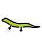
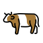
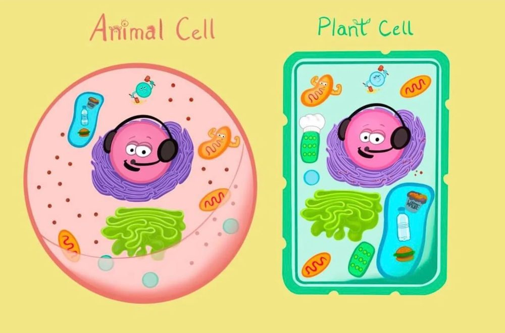
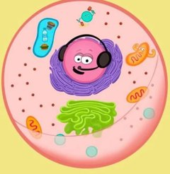
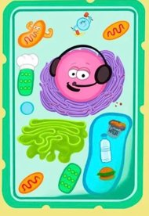

الملخّص
كل مواد امتحان البيولوجيا بمكان واحد: كل موضوع شو هو بسطرين، الفرق بين الأشياء اللي بتتخربط، وجملة تذكّر.
قبل ما نبلّش
البيولوجيا هي العلم اللي بيدرس الكائنات الحيّة وكل إشي إله علاقة فيها. كل مواد الامتحان بتجاوب على ٣ أسئلة كبار:
- شو هو الكائن الحيّ؟ شو بيعمل (مميزات الحياة)، وشو بيحتاج عشان يعيش (احتياجات البقاء).
- كيف بنرتّب الكائنات الحيّة؟ بدرجات من الذرّة للمجتمع (التدريج البيولوجي)، وبمجموعات (التصنيف: وحيد ومتعدد الخلايا، فقاري ولافقاري).
- من شو مبنية؟ من خلايا: جوّاها عُضيّات، الحيوانية غير النباتية، المواد بتفوت وبتطلع منها بالانتشار، وكل خلية شكلها على قد شغلتها.
بكل موضوع رح تلاقي: شو هو؟ الفكرة بسطرين، الفرق بس لما في شغلتين بيتخربطوا ببعض، ومربّع تذكّر. وبالآخر الخلاصة: ١٠ جمل لازم تعرفهم.
١مميزات الحياة واحتياجات البقاء
مميزات الحياة = إشي بيعمله
ظواهر وعمليات بتصير عند كل الكائنات الحيّة من لحظة ما تنشأ لحد ما تموت.
 التغذية (استهلاك الطاقة)
التغذية (استهلاك الطاقة)
 التنفّس
التنفّس
 التكاثر
التكاثر
 الإفراز
النمو والتطوّر
الإفراز
النمو والتطوّر
 ردّ فعل على محفّزات
ردّ فعل على محفّزات
 الحركة
الحركة
 المبنى الخلوي
المبنى الخلوي
احتياجات البقاء = إشي بيحتاجه
أشياء حيوية ما بيقدر الكائن الحيّ يعيش بدونها، وبياخدها من بيئته.
 أكسجين
أكسجين
 ماء
غذاء
ماء
غذاء
 ضوء
تربة
ضوء
تربة
 درجة حرارة ملائمة
حماية
درجة حرارة ملائمة
حماية
٢التدريج البيولوجي (مستويات التنظيم بالطبيعة)
- ذرّةوحدة البناء الأساسية لكل الموادذرّة هيدروجين (وحدة وحدة من مادة المغنيزيوم)
- جزيءذرّتين أو أكتر مربوطين برباط كيميائيجزيء جلوكوز، يعني سكّر (الماء)
- عُضيّةمبنى جوّا الخلية إله وظيفةالميتوكندريون (النواة)
- خليّةوحدة المبنى والأداء الوظيفي الأساسية بالجسم الحيّخلية عضلة بالقلب (خلية بشرة)
- نسيجخلايا بتشبه بعض بالمبنى وبالوظيفةنسيج عضلة القلب (نسيج جلدي)
- عُضوكم نسيج مع بعض، إلهم وظيفة معيّنة بالجسمالقلب (المعدة)
- جهازكم عضو شغلهم المشترك وظيفة وحدة بالجسمجهاز النقل (الدم) (الأنف + القصبة الهوائية + الرئتين)
- كائن حيّجسم بيشتغل لحاله وفيه كل مميزات الحياةالفيل الأفريقي (فيل)
- عشيرةكائنات من نفس النوع عايشة مع بعض بنفس البيئةعشيرة فيلة بالسفانا
- مجتمععشائر من أنواع مختلفة عايشة مع بعض بنفس المنظومة البيئيةفيلة، زرافات، حمير وحش، أسود وأشجار السنط بالسفانا
الفرقعضو ↔ جهاز
عضو = إشي واحد إله وظيفة (القلب، المعدة). جهاز = كم عضو بيشتغلوا مع بعض (الأنف + القصبة الهوائية + الرئتين).الفرقعشيرة ↔ مجتمع
عشيرة = نوع واحد (بس فيلة). مجتمع = كذا نوع مع بعض (فيلة وزرافات وأسود…).٣وحيد الخلية ومتعدد الخلايا
 وحيد الخلية وحيد الخلية |  متعدد الخلايا متعدد الخلايا | |
|---|---|---|
| عدد الخلايا | خلية وحدة | خلايا كتير |
| مين بيعمل الشغل؟ | الخلية الوحيدة بتعمل كل العمليات الحيوية | كل مجموعة خلايا إلها وظيفة مختلفة |
| وين بيعيش؟ | ببيئة رطبة بس | في منه ببيئة رطبة، وفي منه ببيئة جافّة |
| كيف بيدخّل المواد وبيطلّع الفضلات؟ | من خلال غشاء الخلية | من خلال أجهزة الجسم (الهضم، التنفّس، الإفراز) |
| التكاثر | سريع (دقائق، ساعات) | بطيء (أيام، أسابيع، أشهر) |
| أمثلة | بكتيريا، براميسيوم، أميبا | شقائق النعمان، كلب، دودة الأرض، فيل، إنسان |
٤فقاري ولافقاري
الفقاريات
- عظام جوّا الجسم بتعمل هيكل داخلي (من عظم وغضروف)، وبيكبر مع الحيوان.
- عمود فقري بنص الجسم، مبني من عظام قصيرة اسمها فقرات.
- الدم بيجري بجهاز نقل (دموي) مغلق.
- الجهة اليمين من الجسم نفس الجهة الشمال (تماثل ثنائي الجوانب).
- أغلبها إلها زوجين أطراف وذيل.
اللافقاريات
- ما في عظام جوّا جسمها.
- فيها طائفتين: الحشرات (نحلة، ذبابة، خنفساء) والرخويات (حلزون).
 حشرات
حشرات رخويات
رخوياتطوائف الفقاريات
| الطائفة | بتعرفها من | حرارة الجسم | الصغار |
|---|---|---|---|
| الأسماك | زعانف، خياشيم، جلد أملس مخاطي بحراشف | مش ثابتة | بيض بالماء |
 البرمائيات البرمائيات | جلد مكشوف رطب، بتعيش بالماء وبعدين على البرّ، الصغير (شرغوف) غير الكبير | مش ثابتة | بيض بالماء |
 الزواحف | بتزحف، جلد جافّ بحراشف بتسلخه | مش ثابتة | بيض على اليابسة |
 الطيور الطيور | ريش، منقار، أجنحة، رجلين | ثابتة | بيض على اليابسة |
 الثدييات | شعر (فرو)، الصغار بترضع حليب، صيوان للأذن | ثابتة | جوّا الرحم بجسم الأم |
بالكتاب الأسماك ٣ طوائف، فبصير المجموع ٧ طوائف. بالدفتر بنعدّهم ٥ مجموعات زي الجدول.
٥الخلية الحيوانية والخلية النباتية
| الجزء | شغلته |
|---|---|
| غشاء الخلية | بيغلّف الخلية وبيفصلها عن برّا. نفّاذ اختياري: بيمرّق مواد معيّنة بس. |
| السيتوبلازم | سائل الخلية، شفّاف ولزج بيشبه الجل، بيعبّي معظم الخلية. |
| النواة | فيها المادة الوراثية (DNA)، فيها كل التعليمات لبناء الخلية وشغلها وانقسامها. |
| الميتوكندريا | «محطات القوة»: جوّاها بصير التنفّس الخلوي. |
| الريبوزومات | «مصانع الزلاليات» (البروتينات). |
| جسيمات غولجي | أكياس مسطّحة فوق بعض، بتجهّز الزلاليات والدهون وبتطلّعها برّا الخلية. |
| الشبكة الإندوبلازمية | شبكة أغشية متفرّعة كتير بالسيتوبلازم. |
| جدار الخلية | بالنباتية بس: صلب، بيحمي وبيدعم الخلية وبيحافظ على شكلها. |
| البلاستيدات الخضراء | بالنباتية بس: فيها كلوروفيل، وبتعمل التمثيل الضوئي (النبات بيصنع أكله بضو الشمس). |
| الفجوة العصارية | بالنباتية بس: كبيرة، بتخزّن الماء والمواد، وبتحافظ على توازن المي بالخلية. |

بالرسمة في كيس أزرق صغير بالخلية الحيوانية كمان. بس حسب الكتاب، الفجوة العصارية هي من أجزاء الخلية النباتية، وهيك بنجاوب بالامتحان.
| أجزاء الخلية |  خلايا حيوانية |
 خلايا نباتية |
|---|---|---|
| جدار الخلية | لا | نعم |
| غشاء الخلية | نعم | نعم |
| البلاستيدات الخضراء | لا | نعم |
| النواة | نعم | نعم |
| الفجوة العصارية | لا | نعم |
| السيتوبلازم | نعم | نعم |
| الميتوكندريا | نعم | نعم |
| الريبوزومات | نعم | نعم |
| جسيمات غولجي | نعم | نعم |
| الشبكة الإندوبلازمية | نعم | نعم |
٦غشاء الخلية وجدار الخلية
| غشاء الخلية | جدار الخلية | |
|---|---|---|
| شغلته | بيفصل الخلية عن برّا، بيحافظ على بيئة ثابتة جوّاها، وبيحميها من عناصر غريبة (فيروسات، بكتيريا) | بيثبّت الخلية، بيحافظ على شكلها، وبيحميها من الصدمات والضغط |
| قديش صلب؟ | مش صلب: طبقتين من جزيئات الدهون وبيناتهم زلاليات | صلب |
| مين بيمرق منه؟ | نفّاذ اختياري: بيختار، مواد بتمرق ومواد لأ | فيه فتحات كتير: مش اختياري، المواد بتمرق |
| عند مين؟ | بكل الخلايا | النباتات، الفطريات، وقسم من البكتيريا |
٧الانتشار
- من وين لوين؟ من المحل اللي فيه من المادة كتير للمحل اللي فيه منها شوي (بنقول: مع اتجاه منحدر التراكيز).
- ليش؟ الجزيئات دايمًا بتتحرّك بكل الاتجاهات وبتتصادم ببعض.
- لوقتيش؟ لحد ما يصير التركيز نفسه بكل محل (متجانس).
عبر غشاء الخلية: إذا التركيز برّا أعلى، المادة بتفوت لجوّا الخلية. إذا التركيز جوّا أعلى، بتطلع لبرّا. هيك بيمرقوا مثلًا المي والأكسجين وثاني أكسيد الكربون.
الفرق| الانتشار | المضخّات | |
|---|---|---|
| بدّه طاقة؟ | لأ | آه |
| كيف؟ | المادة بتمرق لحالها عبر طبقتي الدهون، أو عبر قنوات وناقلات بالغشاء | الخلية «بتضخّ» المادة لجوّا أو لبرّا بمضخّات خاصّة بالغشاء |
كمان بالكتاب: انتشار المي عبر غشاء اختياري، من محلول فيه مي كتير (مواد ذايبة قليلة) لمحلول فيه مي أقل (مواد ذايبة كتير)، اسمه أسموزا (تناضح).
٨أنواع الخلايا بالجسم
| الخلية | شغلتها | كيف شكلها بيساعدها؟ |
|---|---|---|
| خلية عضلات | تحريك الجسم | طويلة ومرنة، بتتقلّص وبتتمدّد، وفيها ميتوكندريا كتير بتعطيها طاقة |
| خلية أعصاب | استيعاب معلومات من البيئة ونقلها | إلها فروع (تفرّعات)، واحد منها طويل كتير بيوصّل المعلومات لبعيد |
| خلية دم حمراء | نقل الأكسجين من الرئتين لكل الخلايا، وثاني أكسيد الكربون للرئتين | صغيرة، قرص مفلطح مرن بيضغط حاله وبيوصل لأضيق الشعيرات، بلا نواة ومليانة هيموغلوبين |
| خلية دم بيضاء | حماية الجسم والدفاع عنه من الأجسام الغريبة | بتغيّر شكلها وبتبعت أذرع بتحاصر الجسم الغريب وبتبلعه |
| خلية بشرة | بتغلّف الجسم وبتحمي الأنسجة اللي جوّا | كثيفة كتير ومتراصّة، بتعمل طبقة بتمنع دخول الأجسام الغريبة |
| خلية حيوان منوي | التكاثر: بتتّحد مع البويضة وبتكوّن جنين | صغيرة كتير وإلها سوط (ذيل) بتتحرّك فيه بسرعة |
| خلية شعيرات ماصّة | امتصاص الماء والأملاح من التربة (بجذور النبات) | إلها امتداد طويل ودقيق بيتغلغل بين ذرّات التراب وبيكبّر سطح التلامس |
٩قطعة بحث علمي
| العامل المؤثّر | الإشي اللي غيّروه بين الحالتين |
|---|---|
| العامل المتأثّر | الإشي اللي قاسوه، وتغيّر بسبب المؤثّر |
| العوامل الثابتة | كل إشي تاني ضلّ نفسه بالحالتين، عشان التجربة تكون عادلة |
الخلاصة: ١٠ جمل لازم تعرفهم
- بيعمل = ميزة حياة (٨ مميزات). بيحتاج = احتياج بقاء (٧ احتياجات).
- الحركة لحالها مش دليل على الحياة: السيارة والغيوم بتتحرّك.
- ذرّة ← جزيء ← عضيّة ← خليّة ← نسيج ← عضو ← جهاز ← كائن حيّ ← عشيرة ← مجتمع.
- عشيرة = نوع واحد. مجتمع = أنواع مختلفة.
- وحيد الخلية: خلية وحدة بتعمل كل إشي، بيعيش ببيئة رطبة بس، وبيتكاثر بسرعة.
- فقاري = عظام وعمود فقري جوّا الجسم. حرارة ثابتة = طيور وثدييات بس.
- النباتية = الحيوانية + جدار + بلاستيدات خضراء + فجوة عصارية.
- الغشاء بيختار مين يمرق. الجدار صلب وفيه فتحات، وبيحافظ على الشكل.
- الانتشار من تركيز عالي لمنخفض، بلا طاقة. المضخّات بدها طاقة.
- كل خلية شكلها على قد شغلتها. البكتيريا وخلية الدم الحمراء بلا نواة.